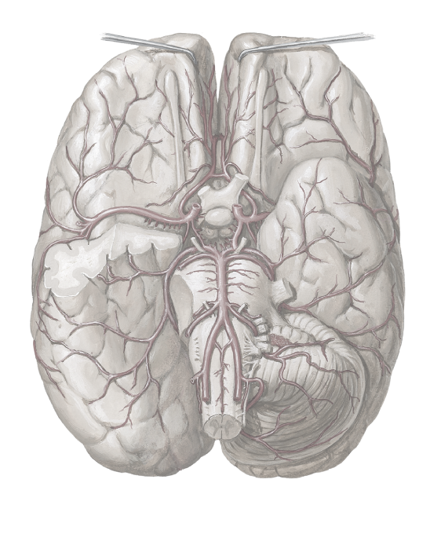

Anterior communicating artery
Anterior cerebral artery
Internal carotid artery
Middle cerebral artery
Posterior communicating artery
Posterior cerebral artery
Superior cerebellar artery
Basilar artery
Anterior inferior cerebellar artery
Vertebral artery
Posterior inferior cerebellar artery
1
2
3
4
5
6
7
8
9
10
11